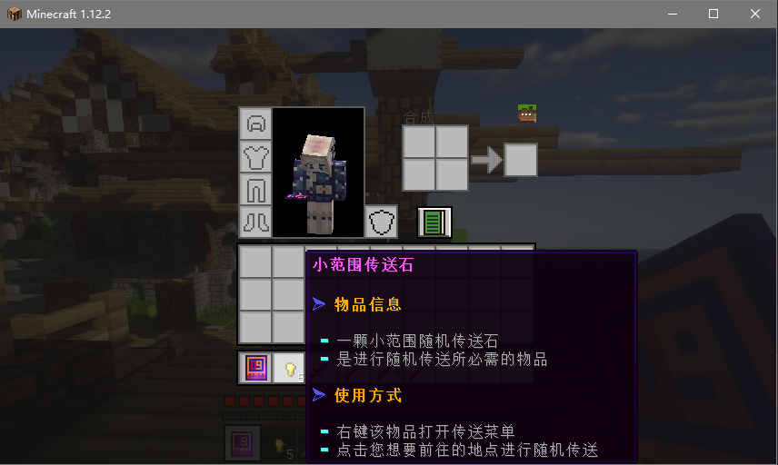
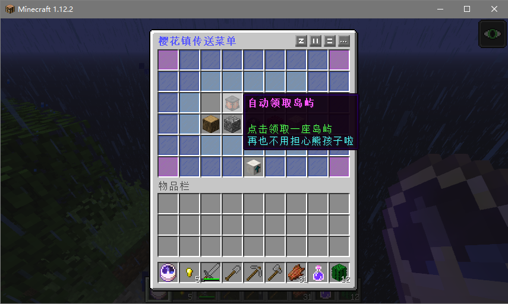
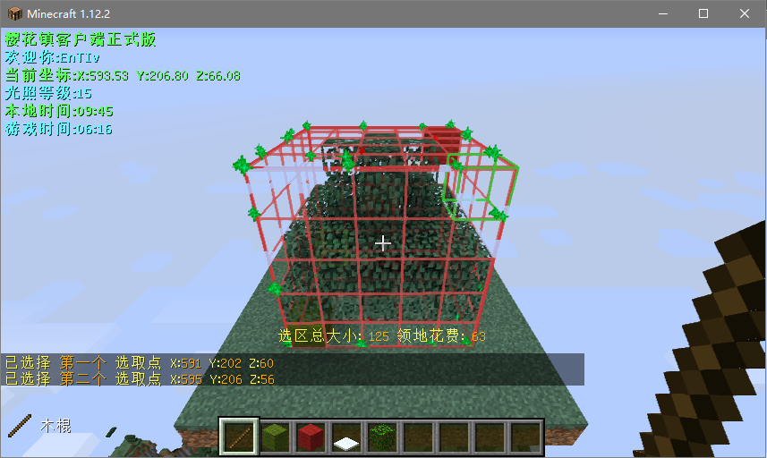
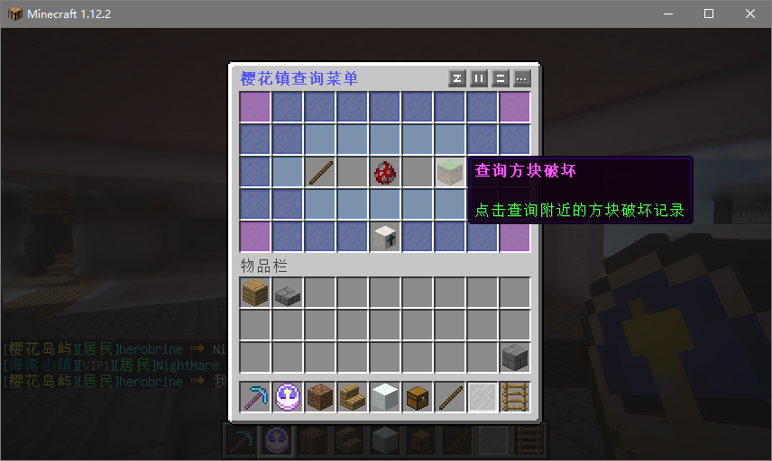
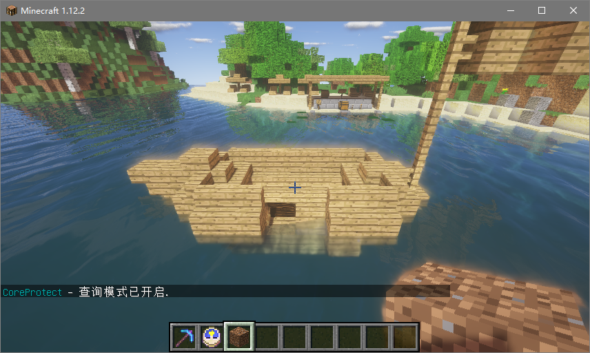
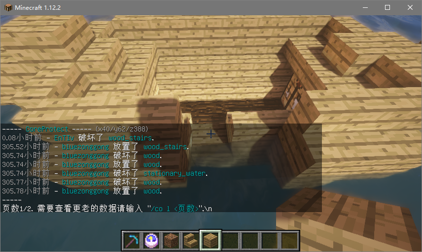
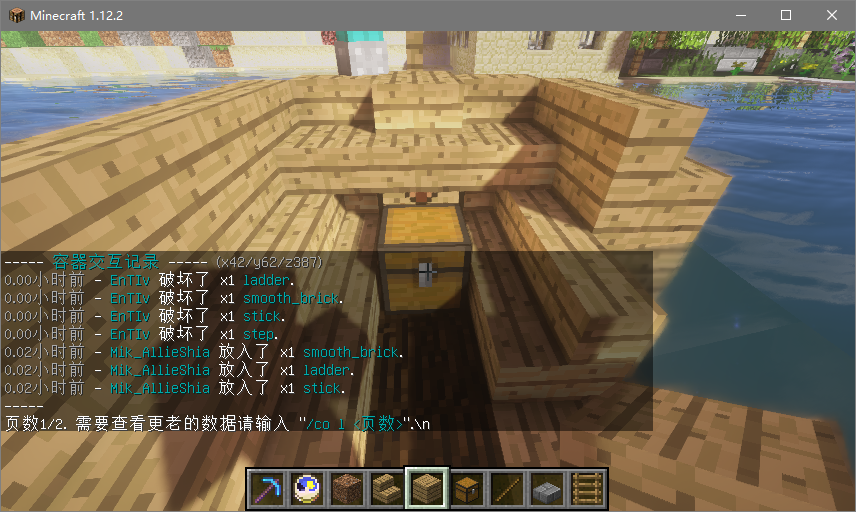

当您进入樱花镇生存服时,按 E 键查看背包
服务器会赠送一套石制工具,五个金粒和一个时钟
主城是无法进行破坏的哦,想要生存的话得前往别的世界才能进行生存
首先先把金粒拿在手上右键打开传送菜单,选择您想要前往的世界,点击传送即可

注意!传送石总共有 5 个,传送完毕后为了避免浪费传送石
请把时钟拿在手上右键打开,依次点击传送菜单,家地点菜单,设置一个家
家设置完毕之后可以点击回到家,这样下次就能回到您所设置家的地点哟~
当您获取到一定资源时,就需要找地方安家了呢
服务器圈地价格较高,推荐新玩家前往岛屿进行安家
右键时钟打开传送菜单,点击领取一座岛屿即可领取一座专属于自己的岛屿
在岛屿内他人无法破坏,并且您可以邀请朋友加入您的岛屿(具体查看岛屿教程)

初始岛屿较小需要扩建,推荐和朋友一起玩耍方便快速扩大岛屿
发展到后期也可以考虑攒钱去野外居住,建造大型刷怪塔等自动化设施
如果要在野外居住,请不要考验其他玩家的素质
一定要好好把箱子锁上,有钱圈地的就尽量圈地,不给熊孩子任何可乘之机
如果没钱圈地造成的财务损失不会赔偿,只会将熊孩子进行封号处理,所以请圈地!
将某玩家加入好朋友名单可以让该玩家在任何时候
都能对您的岛屿进行建筑,只建议给完全信任的朋友哦
/p trust 玩家 将某玩家添加到好朋友名单
/p untrust 玩家 将某玩家从好朋友名单中移除
将某玩家加入建筑者名单可以让该玩家只允许在您
在线的时候对您的岛屿进行建筑,建议给刚刚交到的新朋友哟
/p add 玩家 将某玩家添加到新朋友名单
/p remove 玩家 将某玩家从新朋友名单中移除
将某玩家加入黑名单可以让该玩家
无法进入您的岛屿,建议将捣乱的人添加进该名单
/p deny 玩家 将某玩家添加到黑名单
/p undeny 玩家 将某玩家从黑名单中移除
可以使用符号 * 来表示所有玩家
例如使用 /p deny * 拉黑所有人等等
/p h 回到自己的岛屿
/p v 玩家 拜访某玩家的岛屿
/p setalias 设置岛屿名称
/p sethome 设置岛屿传送点
/p info 查看您所在的岛屿信息
/p clear 清空你的岛屿(会删除建筑)
/p delete 删除您的岛屿(会删除建筑)
/p list 玩家 列出该玩家的所有岛屿
/p setdescription 设置岛屿描述
/p middle 将你传送到岛屿的中心点
/p setowner 玩家 将岛屿给予另一名玩家
/p kick 玩家 将某玩家踢出你的岛屿
/p rate 分值 给一个岛屿评分
在野外建筑时需要圈地避免被熊孩子破坏
如不圈地导致的财物丢失,建筑被毁概不负责哟
在服务器中需要使用木棍进行圈地
每圈一格方块都将会花费 0.5 金币

如图所示,如果想要保护这棵树,那么需要手里拿着木棍
左键绿色羊毛选取第一个点,右键红色羊毛选取第二个点构成长方体
保护范围为两个点构成的长方体,不使用客户端的话有可能看不到保护范围
推荐使用樱花镇客户端来进行圈地,圈地的范围大小和金钱将会显示在屏幕中央
如确认无误可使用指令 /res create 领地名 创建领地
领地名支持中文数字英文下划线组合,但是不支持特殊符号,也请不要起含有辱骂性质的领地名
想要扩展领地可以输入指令 /res expand 格数 向您所看的地方扩建指定格数的领地范围
/res padd 玩家 允许某玩家在您所在的领地建筑
/res premove 玩家 禁止某玩家在您所在的领地建筑
/res set 设置您的领地权限
/res tp 领地名 传送到指定领地
/res tpset 设置领地的传送点为您当前站立的地方
/res message enter 消息 设置别人进入您的领地的消息
/res message leave 消息 设置别人离开您的领地的消息
/res expand 格数 向您所看的地方扩建指定格数的领地范围
/res remove 移除当前您所在的领地
/res rename 重命名您所在的领地
/res give 玩家 将您的领地给予某玩家
/tpa 玩家 请求传送到某玩家身边
/tpahere 玩家 请求某玩家传送到你身边
/tpaccept 接受传送请求
/tpadeny 拒绝传送请求
/spawn 回到主城
/back 返回上次传送地点
/bal 玩家 查看某玩家的金钱
/baltop 查看服务器金钱排行榜
/t 玩家 内容 私聊某玩家
/r 内容 回复最后一个私聊你的玩家
/ignore 玩家 忽略某玩家聊天
/p trust 玩家 允许某玩家在您的岛屿建筑
/p untrust 玩家 禁止某玩家在您的岛屿建筑
/p h 回到自己的岛屿
/p v 玩家 拜访某玩家的岛屿
/p setalias 设置岛屿名称
/p sethome 设置岛屿传送点
/p info 查看您所在的岛屿信息
/p clear 清空你的岛屿(会删除建筑)
/p delete 删除您的岛屿(会删除建筑)
/p list 玩家 列出该玩家的所有岛屿
/p setdescription 设置岛屿描述
/p middle 将你传送到岛屿的中心点
/p setowner 玩家 将岛屿给予另一名玩家
/p kick 玩家 将某玩家踢出你的岛屿
/p rate 分值 给一个岛屿评分
/res padd 玩家 允许某玩家在您所在的领地建筑
/res premove 玩家 禁止某玩家在您所在的领地建筑
/res set 设置您的领地权限
/res tp 领地名 传送到指定领地
/res tpset 设置领地的传送点为您当前站立的地方
/res message enter 消息 设置别人进入您的领地的消息
/res message leave 消息 设置别人离开您的领地的消息
/res expand 格数 向您所看的地方扩建指定格数的领地范围
/res remove 移除当前您所在的领地
/res rename 重命名您所在的领地
/res give 玩家 将您的领地给予某玩家
右键楼梯可以坐下
用鸡蛋右键砸小动物可以扑捉
聊天输入 [i] 可以展示手上物品
服务器全服死亡不掉落[暂时不掉落]
如果主菜单不见了下线重上即可获得
指令/lrp 可以给服务器的玩家发红包
使用告示牌右键箱子可以直接锁住箱子
如果您的建筑或东西被盗,使用查询功能能快速找到熊孩子
并且截图给服务器的管理员查看的话还能对破坏的熊孩子封号处理
使用简单查询模式可以简单
查到破坏建筑或是击杀养殖动物的熊孩子
右键时钟打开菜单,依次点击管理-查询菜单,拥有三个按钮
第一个开启查询模式,查询模式的教程在下面会进行详细的讲解
第二个和第三个是快速查询模式
可以快速查询您所在的地方的建筑被谁破坏了,以及生物被谁击杀了

使用 /co l 页数 来进行翻页
例如使用 /co l 3 即可查看第三页的查询记录
我们先看这一艘小船,有几个方块被破坏了,如何使用查询模式查询呢?
首先输入指令 /co i 可以开启查询模式

开启之后,手里拿着一个方块,鼠标右键点击被破坏的地方
可以查询放置方块的地点的方块记录,左键点击则是查询点击地点的方块记录

如果想要查询箱子里的东西被谁盗窃了
直接右键箱子即可查询箱子内物品的取出放入记录

查询完毕记得输入再次输入指令 /co i 来关闭查询模式哦
樱花主城是玩家的出生点
该世界无法破坏任何方块,需要通过传送前往别的世界
樱花岛屿是提供给玩家居住的地方
岛屿内可随心所欲的建筑,并且可以邀请朋友一起居住
海湾小镇是樱花镇的主世界,可以挖矿建筑等等
海湾小镇永不刷新,玩家们可在海湾小镇放心的居住哦
痛苦炼狱是服务器的地狱世界
痛苦炼狱危险重重,各位居民们要小心了
末路之地是服务器的末地世界
前往末路之地可要小心巨大的末影龙哦